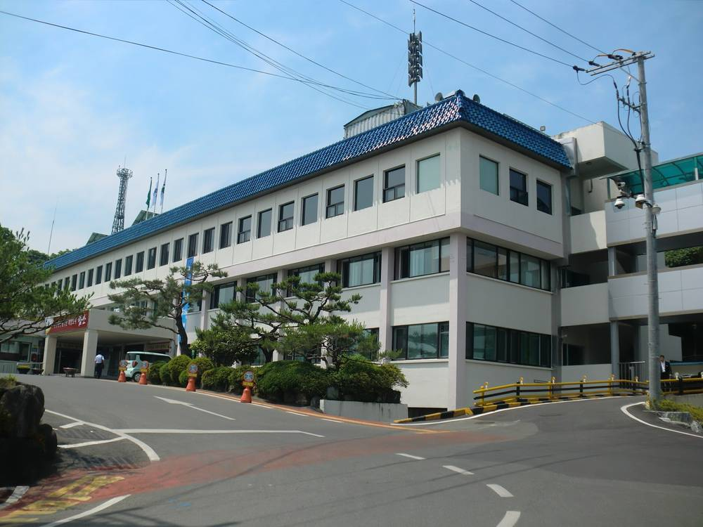

함안군, 공영주차장 3곳에 태양광…지방공사가 설치·운영 맡아 2030년 준공 목표

함주공원·함안스포츠센터·칠원 구성지구 대상, 주차구획 1,000㎡ 넘는 공영주차장 설치 의무 앞서 대응
경남 함안군이 지방공기업인 함안지방공사와 손잡고 공영주차장 태양광 발전사업에 나선다. 군은 12일 군청에서 함안지방공사와 '함안군 태양광 발전설비 설치사업' 업무협약을 맺었다. 첫 대상지는 함주공원, 함안스포츠센터, 칠원 구성지구의 공영주차장 3곳이다. 군은 인허가 등 행정 지원을, 지방공사는 설비 설치와 운영·유지관리를 맡는다. 전기사업허가와 한전 전력수급계약(PPA) 절차를 마친 뒤 2027년 공사를 시작해 2030년까지 끝낸다는 계획이다. 이번 사업은 주차구획 면적이 1,000㎡ 이상인 공영주차장에 재생에너지 설비를 갖추도록 한 재생에너지법 개정 내용에 미리 대응하려는 것이라고 군은 설명했다.
시민에너지 관점
공영주차장 태양광 설치가 의무가 되면서 전국 지자체가 같은 숙제를 받았고, 누가 짓고 수익을 누가 가져가느냐가 이제 핵심 질문이다. 지방공사가 직접 운영하면 수익이 민간 사업자에게 빠져나가지 않는다는 장점이 있지만, 주민은 여전히 지켜보는 사람에 머문다. 수원·전주처럼 협동조합과 시민펀드를 함께 묶으면 같은 주차장에서 군민이 출자자이자 배당을 받는 주인이 될 수 있다. 착공까지 남은 1년 동안 함안군이 군민 참여 몫을 사업 구조에 넣는 방안을 검토하기를 바란다.
출처: 한국시사경제 2026-11-13 경남취재본부 원문 보기
咸安郡、公営駐車場3カ所に太陽光…地方公社が設置・運営し2030年完成目指す
咸州公園・咸安スポーツセンター・漆原九城地区が対象、駐車区画1,000㎡以上の設置義務に先手
慶尚南道咸安（ハマン）郡が地方公企業の咸安地方公社と組み、公営駐車場の太陽光発電事業に乗り出す。郡は12日、郡庁で同公社と「咸安郡太陽光発電設備設置事業」の業務協約を結んだ。最初の対象は咸州公園、咸安スポーツセンター、漆原九城地区の公営駐車場3カ所。郡が許認可などの行政支援を担い、公社が設備の設置と運営・維持管理を受け持つ。電気事業許可と韓国電力との電力受給契約（PPA）の手続きを経て2027年に着工し、2030年までに完成させる計画だ。郡は、駐車区画面積が1,000㎡以上の公営駐車場に再生可能エネルギー設備を義務付けた法改正に先立って対応するものだと説明した。
市民エネルギーの視点
公営駐車場への太陽光設置が義務となり、全国の自治体が同じ宿題を抱えた。いま問われているのは、誰が建て、収益を誰が受け取るかだ。地方公社が自ら運営すれば収益が民間事業者に流れ出ない利点はあるが、住民は見守る立場にとどまる。水原や全州のように協同組合と市民ファンドを組み合わせれば、同じ駐車場で郡民が出資者となり配当を受ける主人になれる。着工までの1年で、咸安郡が住民参加の枠を事業構造に組み込むことを期待したい。
出典: 한국시사경제 2026-11-13 경남취재본부 原文を読む
咸安郡在3处公营停车场建太阳能…由地方公社负责建设运营，目标2030年竣工
对象为咸州公园、咸安体育中心、漆原九城地区，提前应对停车面积1,000平方米以上停车场的安装义务
韩国庆尚南道咸安郡将与地方公企业咸安地方公社合作，推进公营停车场太阳能发电项目。郡政府12日在郡厅与该公社签署了"咸安郡太阳能发电设备安装项目"业务协议。首批对象为咸州公园、咸安体育中心和漆原九城地区的3处公营停车场。郡政府负责许可等行政支持，公社负责设备安装及运营维护。项目将在完成电力业务许可和与韩国电力公社的购电协议（PPA）程序后于2027年开工，计划2030年前竣工。郡政府表示，此举是为提前应对法律修订——停车区面积1,000平方米以上的公营停车场须配备可再生能源设施。
市民能源视角
随着公营停车场安装太阳能成为义务，全国地方政府都接到了同一份作业，如今的关键问题是由谁来建、收益归谁。由地方公社直接运营，收益不会流向民间企业，但居民仍只是旁观者。若像水原、全州那样把合作社和市民基金结合起来，郡民就能在同一个停车场成为出资者和分红的主人。希望咸安郡利用开工前的一年时间，研究在项目结构中加入居民参与份额。
来源: 한국시사경제 2026-11-13 경남취재본부 查看原文
Haman County to put solar on three public car parks, with its local public corporation building and running them by 2030
Hamju Park, Haman Sports Center and Chilwon Guseong sites chosen ahead of mandate for public car parks over 1,000㎡
Haman County in South Gyeongsang Province is teaming up with its municipal enterprise, Haman Local Public Corporation, to install solar power at public car parks. The county signed a memorandum of understanding with the corporation at the county office on Nov. 12. The first sites are three public car parks at Hamju Park, the Haman Sports Center and the Chilwon Guseong district. The county will provide administrative support such as permits, while the corporation will install, operate and maintain the equipment. After securing an electricity business licence and a power purchase agreement (PPA) with KEPCO, construction is set to begin in 2027 with completion targeted by 2030. The county said the project is meant to get ahead of a revised renewable energy law that requires public car parks with more than 1,000㎡ of parking space to install renewable energy facilities.
Citizen Energy View
With solar on public car parks now mandatory, every local government in Korea has the same homework, and the real question is who builds and who keeps the revenue. A council-owned corporation running the plants keeps profits from leaking to private developers, but residents remain spectators. Pairing the project with a cooperative and a citizen fund, as Suwon and Jeonju are doing, would let local people become investors who share in the dividends from the same car parks. Haman has a year before construction starts — enough time to build a resident stake into the project.
Source: 한국시사경제 2026-11-13 경남취재본부 Read the original